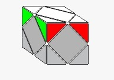
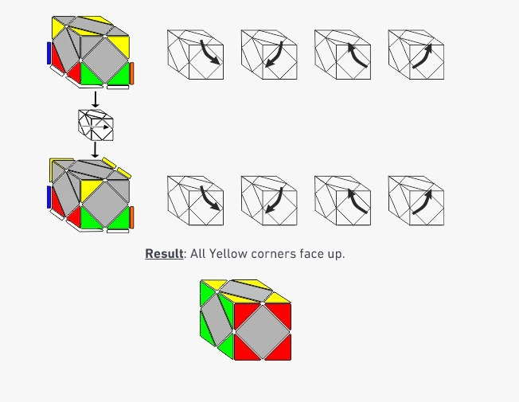

How to Solve the Skewb
Interactive Skewb Tutorial
Before You Start
Solving the Skewb is easy, once you gain an understanding around the turning of a Skewb. There are fewer pieces to put in place than a regular 3x3 cube.
The algorithm for each of the 4 steps is very similar. BUT, make sure you hold the cube in the correct orientation.
Step 1: Arrange the White Corners Around the White Center
This process is generally intuitive, and you can use the steps below as a guide.
- Keep WHITE centre on top.
- Find the WHITE/RED/GREEN corner. If the corner is in the top layer but the wrong way around, then move it to the bottom layer.
- Hold your Skewb with the WHITE center on top and the WHITE/RED/GREEN corner in the bottom right side.
- Twist the bottom right corner until the WHITE is facing to the right side.
- Twist the bottom left corner to move the WHITE/RED/GREEN corner in place.
- Find the WHITE/RED/BLUE corner.
- If the corner is in the top layer (either in the wrong position or the wrong way around), then move it to the bottom layer. Take care to move the corner to the opposite side of the already solved WHITE/GREEN/RED corner.
- If your corner is in the bottom layer underneath the solved corner, then move it to the opposite bottom corner.
- When the corner is in the bottom layer, hold the Skewb with the solved top corner in the back left position, and the WHITE/RED/BLUE corner will now always be in the front right side.
- Twist the bottom right corner until the WHITE is facing to the right side.
- Twist the bottom left corner up to put the corner in place, which doesn't disturb the solved corner.
- Find the WHITE/BLUE/ORANGE corner.
- If the corner is in the top layer and the wrong way around, then move it to the bottom layer. Take care to move the corner to the opposite side of the already solved WHITE/RED/BLUE corner.
- If your corner is in the bottom layer underneath the solved WHITE/RED/BLUE corner, then move it to the opposite bottom corner.
- When the corner is in the bottom layer, hold the Skewb with the two solved corners in the back, and the WHITE/BLUE/ORANGE corner will now always be in the front right side.
- Twist the bottom right corner until the WHITE is facing to the right side.
- Twist the bottom left corner up to put the corner in place, which doesn't disturb the solved corner.
- Find the WHITE/GREEN/ORANGE corner, which is the last corner.
- If it is in the top layer, but the wrong way around, then move it to the bottom layer THIS TIME TAKING CARE that WHITE is NOT on the bottom.
- You will now have one of two cases: the corner is to the right of the unsolved spot OR the corner is to the left of the unsolved spot.
- Choose the case that matches your situation and follow the steps to put the last corner in place without disturbing the solved corners.
If the last corner is in the bottom layer, with white facing down, then twist the corner below the unsolved top corner to move the WHITE/GREEN/ORANGE corner so that white is NOT facing the bottom.
Result:
Make sure the side colours of the corners match.
Step 2: Orientate the Yellow Corners
1. Turn the cube so that the White is now at the bottom.
2. You will have one of two cases. Hold your Skewb as shown in the image below and find the case that matches your situation.
3. Follow the steps to orientate the yellow corners.
Step 3: Move the Yellow Center in Place
- Hold the cube so that:
- White is at the bottom
- The orientated Yellow corners are at the top
- Yellow center is at the back
- Perform the steps below to move the Yellow center in place.
Step 4: Complete the Last 3 Centers
- If you have four unsolved centers, hold the cube so that WHITE and YELLOW are on the left and right.
- Perform the steps below to cycle three centers.
- After this algorithm, you will have three solved centers, which includes the WHITE and YELLOW.
- Hold the cube so that:
- WHITE and YELLOW are on the left and right
- A solved center is on the bottom
- The top center color matches the front corners
- Perform the steps below to cycle three centers.
Congratulations!! You Have Done It!!
Your Skewb is now solved! Great job!